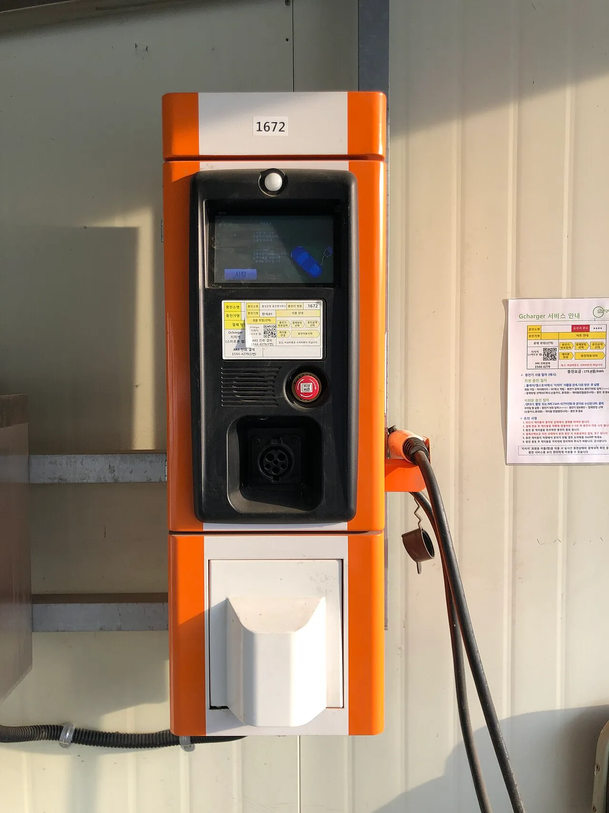
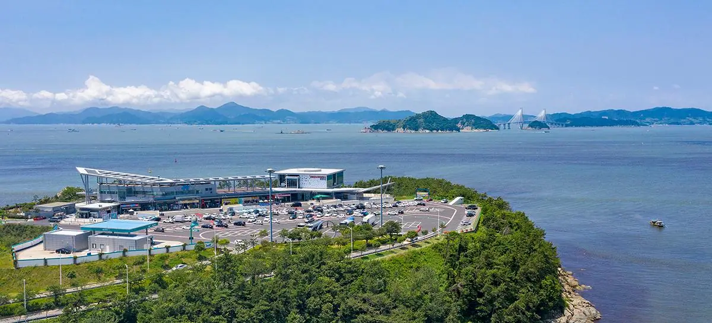
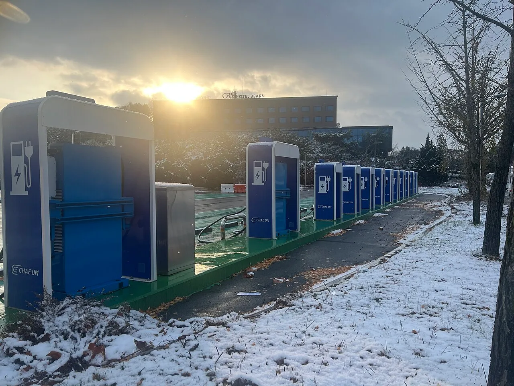

▲ 전기차 충전소. 여행에서는 설치 대수보다 지금 비어 있는지가 관건이다
국내 전기차 충전기는 40만 기를 넘어섰습니다. 숫자만 보면 부족할 이유가 없어 보입니다.
그런데 여행지에서는 자주 기다립니다. 총량과 실사용 사이에 간극이 있기 때문입니다. 이 간극이 어디서 생기는지 알면 계획이 달라집니다.
1. 40만 기와 제주 8.1대
두 숫자를 같이 봐야 합니다.
| 항목 | 수치 |
|---|---|
| 전체 충전기 | 40만 기 이상(2026년 추정) |
| 전기차 등록 | 82만 2,081대 (2025년 8월 말) |
| 1기당 전기차 | 수도권 1.9대 · 제주 8.1대 |
40만 기의 대부분은 완속입니다. 2026년 정부 보급 계획만 봐도 완속 6만 5,000기에 급속은 4,450기입니다. 아파트와 상업시설 주차장에 설치된 7kW급 충전기가 큰 비중을 차지합니다. 이 충전기들은 밤새 세워두는 용도이지 여행 중 30분 만에 채우는 용도가 아닙니다.

▲ 생활권 충전기는 대개 완속이다. 밤새 세워두는 조건이 전제된다 ⓒ Wikimedia Commons
2. 고속도로는 이미 해결된 구간입니다
이동 중 충전은 현재 큰 문제가 아닙니다. 주요 고속도로 휴게소 대부분에 급속충전기가 설치돼 있고, 과거에 비해 대기 시간도 크게 줄었습니다.
휴게소 충전이 편한 이유는 어차피 쉬어야 하기 때문입니다. 화장실과 식사를 겸하면 충전 시간이 별도 비용으로 느껴지지 않습니다.
📍 연휴에는 이야기가 달라집니다
평시에는 여유가 있어도 연휴에는 휴게소 충전기에 줄이 생깁니다. 주차장 진입 자체가 밀리는 상황에서 충전 대기까지 겹치면 계획이 무너집니다.
연휴 장거리라면 휴게소가 아닌 IC 인근 충전소를 대안으로 잡아두는 편이 낫습니다. 고속도로를 잠깐 빠져나가는 편이 결과적으로 빠른 경우가 많습니다.

▲ 연휴 휴게소는 주차장 진입에만 30분이 걸리기도 한다. 충전 대기는 그 위에 얹힌다 ⓒ 부산광역시 (공공누리 제1유형)
3. 진짜 문제는 도착한 다음입니다
여행에서 충전이 까다로워지는 지점은 목적지입니다.
| 장소 | 여건 |
|---|---|
| 고속도로 휴게소 | 급속 다수 — 양호 |
| 관광지 주차장 | 있어도 1~2기인 경우가 흔함 |
| 숙소 | 완속 위주 · 투숙객 경쟁 |
| 산간·해안 오지 | 충전기 자체가 드묾 |
관광지 충전기가 1~2기라는 점이 핵심입니다. 앞차 한 대가 완속으로 몇 시간 물려 있으면 사실상 없는 것과 같습니다. 게다가 관광지 충전기는 충전이 끝난 뒤에도 차를 빼지 않는 경우가 잦습니다. 차주가 관광 중이기 때문입니다.
📍 제주는 특히 빡빡합니다
충전기 1기당 전기차 대수는 지역별로 크게 갈립니다. 수도권이 1.9대인 반면 제주는 8.1대로 전국 최하위입니다.
렌터카 전기차 비중까지 감안하면 체감은 더 나쁩니다. 제주에서 전기차로 다닐 계획이라면 충전 시간을 일정에 미리 넣어두는 편이 안전합니다.
4. 두 곳씩 묶어서 계획합니다
전기차 여행 계획의 원칙은 단순합니다. 충전 지점을 하나만 잡지 않는 것입니다.
| 원칙 | 내용 |
|---|---|
| 2지점 확보 | 1순위가 사용 중이면 갈 대안을 함께 저장 |
| 30% 규칙 | 잔량 30%에서 다음 충전 지점 확정 |
| 도착 전 충전 | 숙소 도착 직전에 채워두면 다음 날이 편함 |
| 실시간 확인 | 출발 전이 아니라 가는 길에 상태 재확인 |
실시간 충전기 상태는 환경부 무공해차 통합누리집과 각 충전 사업자 앱에서 확인할 수 있습니다.
5. 계절과 지형이 주행거리를 바꿉니다
표시 주행거리를 그대로 믿으면 안 되는 상황이 있습니다.
| 조건 | 영향 |
|---|---|
| 저온 | 배터리 효율 저하 + 난방 전력 소모 |
| 고속 주행 | 공기저항이 속도의 제곱으로 증가 |
| 오르막 | 고도를 올리는 데 에너지 소모 — 다만 내리막에서 일부 회수 |
| 루프박스 | 공기저항 증가로 체감 손실이 큼 |
📍 산간 코스는 계산이 다릅니다
고갯길을 오를 때 전력 소모가 급증합니다. 다만 내려올 때 회생제동으로 일부를 회수합니다.
왕복 코스라면 순손실이 생각보다 작습니다. 반대로 편도로 고지대에 올라가 그대로 다른 길로 빠지는 코스라면 회수 구간이 없어 손실이 그대로 남습니다.

▲ 강원 지역 급속충전소. 저온에서는 충전 속도 자체도 함께 떨어진다 ⓒ Wikimedia Commons
6. 섬에 갈 때는 조건이 하나 더 붙습니다
차를 배에 싣고 섬으로 들어가는 경우, 전기차에는 충전율 50% 이하라는 선적 조건이 붙습니다.
가득 채워서 가는 계획이 성립하지 않는다는 뜻입니다. 도착 직후 충전할 수 있는 지점을 미리 확보해두어야 합니다. 섬은 충전 인프라가 육지보다 얇으므로, 이 확인은 선택이 아니라 필수에 가깝습니다.
7. 정리
국내 충전기는 40만 기를 넘어선 것으로 추정되지만 대부분 완속입니다. 2026년 보급 계획도 완속 6만 5,000기에 급속은 4,450기입니다. 총량과 실사용 사이의 간극이 여기서 생깁니다.
고속도로 휴게소는 급속망이 촘촘해 이동 중 충전은 무난합니다. 문제는 목적지입니다. 관광지 주차장은 충전기가 1~2기에 그치는 경우가 흔하고, 숙소는 완속 위주입니다.
대응은 충전 지점을 두 곳씩 묶는 것과 잔량 30%에서 다음 지점을 확정하는 것입니다. 실시간 상태는 환경부 무공해차 통합누리집에서 확인할 수 있습니다. 배를 타고 섬에 들어간다면 충전율 50% 이하 선적 조건까지 함께 계산해야 합니다.